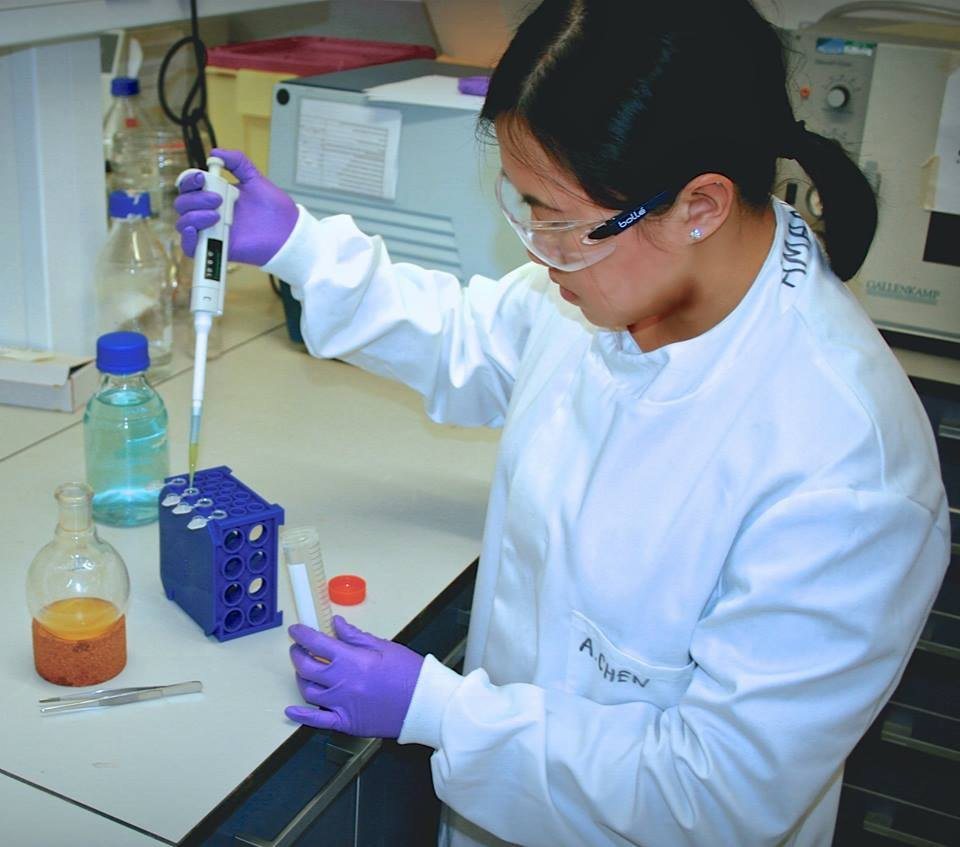

The experience
Amanda Chen spent a Whitaker-supported year at Cambridge in Nigel Slater’s bioscience engineering group. Her reflection connected laboratory learning with the wider community she found through college life.
The perspective
Serving as an academic chair in Churchill’s graduate community brought her into contact with people across disciplines and cultures. She also reflected on mentors who encouraged creative experiments and thoughtful risk-taking, lessons she carried into doctoral training at MIT.
